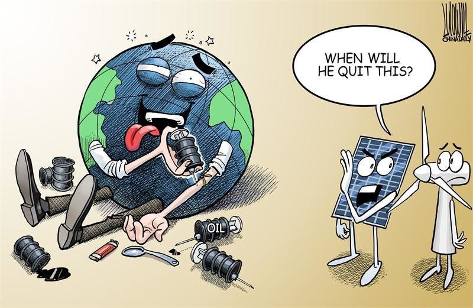
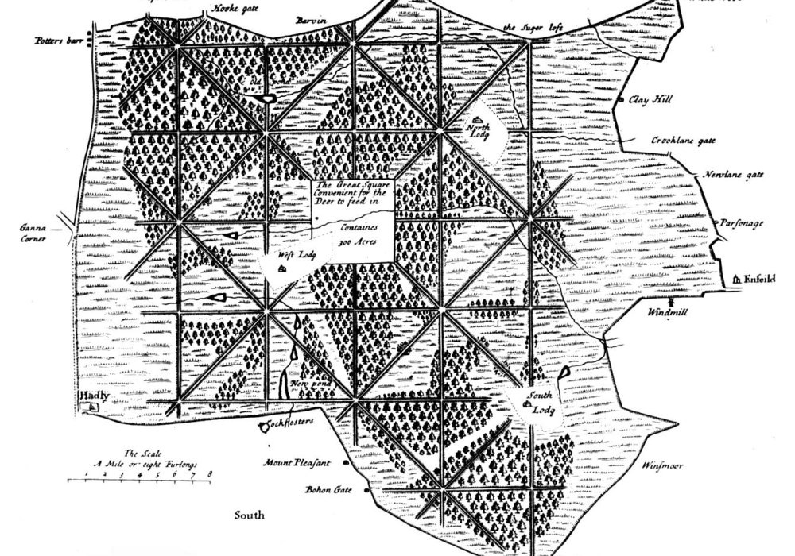

In this installment, I’d like to consider humanity’s so-called “addiction” to geologic carbon from the perspective of human history. Note that there was a long period during which humanity got along just fine without altering the atmosphere, so perhaps we can learn something.

First, an aside. Today, many environmentalists are wistfully nostalgic, aiming to reestablish the supremacy of Nature under the header “preservation.” Taken to the logical extreme, that’s a bad idea—time has only one direction, so our focus must be primarily on the future. Nature has a way of taking care of itself without human intervention anyway. Among other things, an “addiction” to geologic carbon is like our “addiction” to biological carbon (fats and carbohydrates, primarily) in food—that energy is, quite literally, life itself. If you think about it, reactionary naturalists aim to return to a sentimental notion of Earth without humans. Achievable, yes. Wise? It’s assisted suicide.
Nevertheless, it does help to look at decarbonization through the lens of history. From an energy perspective, what was life really like before industrialization?
Rather than continuing a broad philosophical rant, let’s focus on a small part of the world that can be cast in more specific terms. In the mid-17th century, London was at the leading edge of the Industrial Revolution, and relatively accurate records were kept, so it’s a pretty good proxy for the state of the developed world. Further, energy from geologic carbon, in the form of coal, was beginning to be tapped. Let’s focus even more narrowly on a small part of what is now greater London: Enfield Chase. The name is apt: At that time, it was at the edge of farm fields (Enfield) and was a game preserve (Chase) reserved for the monarchy.

Despite being “royal land”, the Chase was customarily shared with commoners for innocuous purposes like grazing cattle in its meadows and collecting firewood. But London grew rapidly as it pivoted from a feudal society toward a more modern commerce-based economy. These societal changes and population growth increased the demand for food and energy, particularly during the dark, cold English winters. Consequently, the firewood of Enfield Chase became a valuable commodity, so valuable that commoners rioted and were arrested and hanged for the theft of firewood…from a forest!
Fortunately, England had discovered an abundant alternative to firewood: Coal. In light of politics, it’s an unfortunate truism of energy macroeconomics where the Law of Supply and Demand needs to be modified: When energy supplies increase, prices go down. But when energy supplies decrease, political unrest ensues. Energy shortages, like food and water, are a matter of life and death. And so it was in 17th-century England. Conflict between merchants (who controlled the coal supply) and the King (who ruled the government) prompted the English Civil War. During the ensuing interregnum (when England had no monarch due to the execution of Charles I), commoners stripped Enfield Chase of its deer and timber.
As Great Britain reestablished itself as a constitutional monarchy with a stronger merchant class (whose wealth was derived both directly and indirectly from coal), it became a maritime nation. Because of these new politics, lumber became more valuable for ships than energy. Hence, coal shipments from mines in the Newcastle region became more cost-effective in the economic energy equation. Consequently, the cost of heating with firewood tripled relative to coal. Despite its drawbacks, London fireplaces were reconfigured to use coal as the new, cheaper energy source. The historic English idiom describing a pointless exercise, “bringing coals to Newcastle,” can be recast on a modern world scale as “shipping crude oil to Riyadh.”—Britain was blessed with abundant, accessible stored energy. It used this resource to build an empire precisely because it could pivot away from renewables.
Yet, today, the world is engaged in a headlong pursuit to return our global economy to renewable energy sources.
Let me be entirely clear—I’m not suggesting that the development of renewable energy sources is not worthwhile. I’m simply saying that betting our future on wholesale replacement of any energy source is unprecedented and may threaten a second Dark Ages. Plus, not a single action taken in the past fifty years (the point at which we became fully aware that we have a problem) has altered the course of the impending catastrophe. The steps under consideration today are too little, too late. Most tactics we’ve chosen to engage this “enemy” are doomed to fail at the scope, timing, and scale that they can be executed.
Nevertheless, there is a reason for hope if we act as if our future depends on it. Because it does.
Continuing with the 17th Century theme: Readers should be careful to avoid Macbeth’s characterization of life in despair upon learning of Lady Macbeth’s death:
“Life is but a walking shadow; a poor player that struts and frets his hour upon the stage, and then is heard no more: it is a tale told by an idiot, full of sound and fury, signifying nothing.” (Shakespeare, Macbeth, Act V, Scene 5, written ca. 1609)
Yes, life is fleeting, but each of us charts our own path. While it may seem from time to time as if it is simply a chorus of meaningless tales told by idiots full of sound and fury (aka pundits and experts), it’s entirely up to each of us what we do with the information and time we’re allotted.
A closing thought from psychoanalyst and Freud disciple Theodor Reik1:
It has been said that history repeats itself. This is perhaps not quite correct; it merely rhymes.
History instructs by analogy. It is foolish to ignore its lessons.
Thank you for reading Healing the Earth with Technology. This post is public so feel free to share it.
Curiosities of the Self: Illusions We Have about Ourselves by Theodor Reik, Essay 3: The Unreachables: The Repetition Compulsion in Jewish History, Quote Page 133, Farrar, Straus & Giroux, New York. (1965)